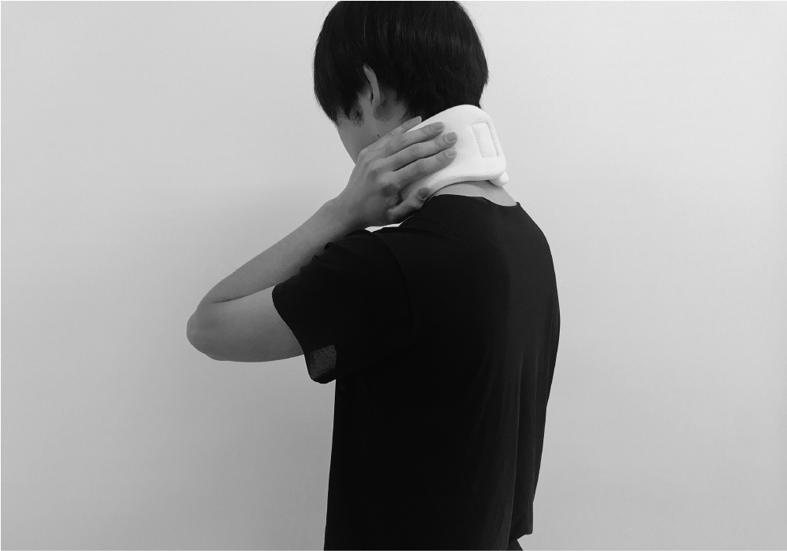
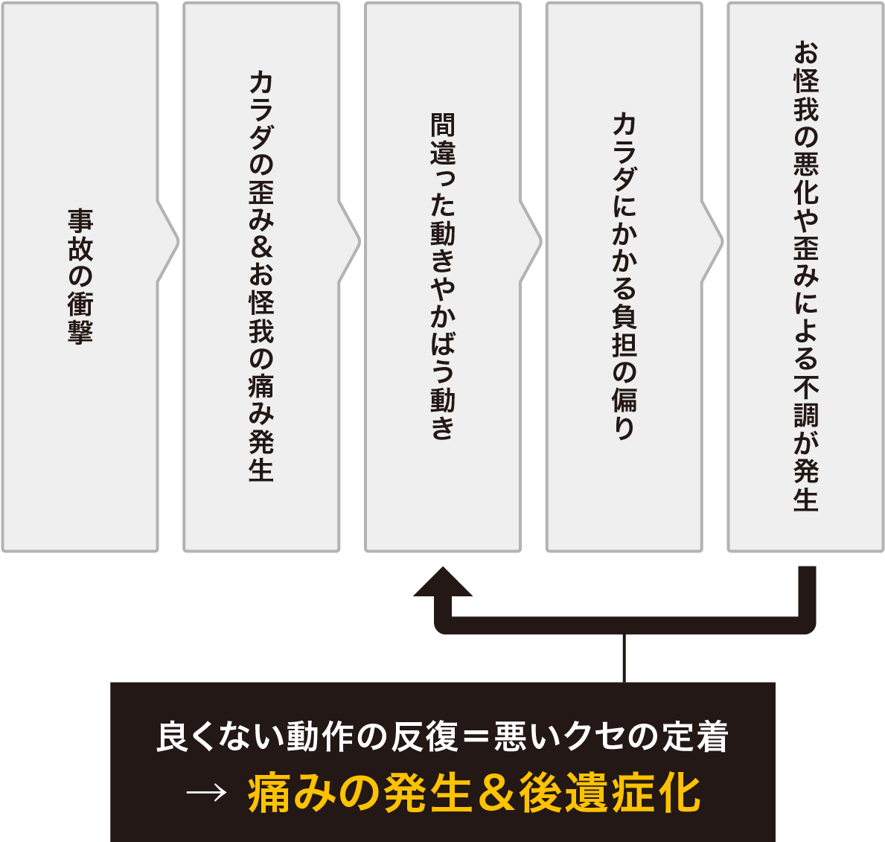
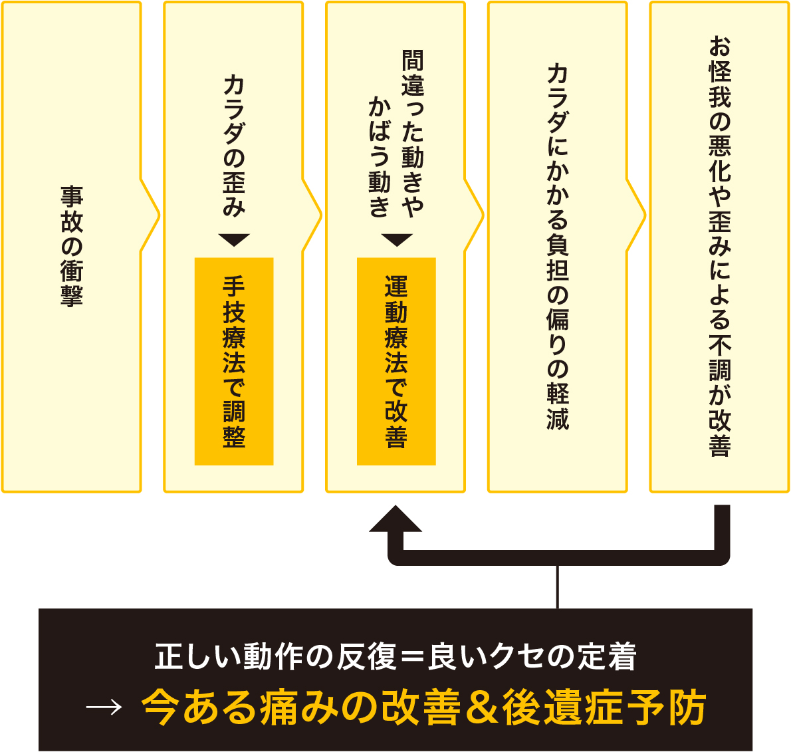

{kind=link}
Q1. 交通事故施術の料金について教えてください。
交通事故の施術は被害者様の場合は基本的に自賠責保険が適応されるため
負担金は0円でお受けいただけます。

交通事故に遭った際、かなりの衝撃で首がムチのようにしなり、首は大事な頭を守るために筋肉を固めます。 このときに、首の筋肉は損傷を起こして痛んでしまいます。
整形外科で、レントゲンや MRI による診断を受けて骨には異常がない、という場合もむち打ちなどの後遺症となって、 目には見えないところで、体に大きな損傷を与えているのです。 事故に遭われた直後は、興奮状態にあり痛みを感じなかったが、時間が経過してから痛みを感じる様になることもあります。 今は何ともなくても、しばらく経ってから、頭痛や手足のしびれ、肩こり、首の痛みなど様々な不定愁訴が出てくることも珍しくありません。

交通事故後には大きく分けて3つの不調が発生します。
一つ目の不調は交通事故に遭ったその時に起きるお怪我で、 例えばむちうち（頸椎捻挫）や捻挫、擦り傷といったものです。
二つ目の不調は、交通事故の際の衝撃によりカラダに歪みがでることと、 痛みをかばう動きからバランスを崩し、肩こりや腰痛、背中のこわばりや 疲労感、関節可動域が狭まるなどといった症状があらわれるといったものです。
三つ目の不調は、カラダの歪みと、かばう動きを放置することで、 脳が歪み、かばう動きを覚えてしまい、症状が慢性化するだけでなく、 一旦良くなったように感じてもまた体調の変化や外部環境により 再発してしまうという、後遺症があげられます。
交通事故の後、目立った怪我がなくてもほとんどの方は、 カラダに多少なりとも衝撃を受けています。 この衝撃による影響が交通事故後、時間が経ってから カラダの不調となって現れることがよくあります。 ひどい状態の場合はもちろんですが、軽いむちうち（頸椎捻挫）程度でも 対処が必要です。
一つ目の不調のわかりやすいお怪我には皆様ケアをされますが、 2つ目の歪み、かばう動きは自覚しにくく、 後遺症になってしまうころには示談が成立してしまい、 その後適切なケアを受けられなくなってしまったということがよくあります。

+Rebody 整骨院では交通事故に遭った際にはすでに自覚されている むちうち（頸椎捻挫） の症状はもちろんのこと、身体全体を見て施術を行います。 さきほどお伝えさせていただいたように実は一見カラダにたいしたことがないように見える事故でも大きな衝撃を受けています。
そのため+Rebody 整骨院では むちうち（頸椎捻挫） の症状改善はもちろんのこと、 後遺症になってしまわないようにカラダの歪みには手技療法を、 かばう（間違えた）動きには運動療法で正しいカラダの使い方を学習させる施術も行っています。
この手技療法および運動療法では +Rebody 整骨院独自の 『自動介助運動アプローチ』 の技術を用いており、 正しい動作の反復を用いてよいクセの定着を行います。
当施設では交通事故後の今ある むちうち（頸椎捻挫） の不調改善だけではなく後遺症が残りにくいカラダづくりも目指していただけます。

T様 女性 19歳 岸和田市
交通事故をきっかけに腰と首を痛みがでたので、施術を受けることになりました。
受けるようになってから少しずつ痛みがなくなり、首のゆがみや、骨盤のゆがみも治してくださり、事故前よりも自分自身の体が良くなりました。
後、とてもみなさん親切で、しゃべりやすく自分的には相談しやすかったです。
痛みとかがでてもあきらめず施術を受けることが私は大事だと思ったので、あきらめずに受けてほしいです。
「免責事項」お客様個人の感想であり、効果効能を保証するものではありません。
交通事故の施術は被害者様の場合は基本的に自賠責保険が適応されるため
負担金は0円でお受けいただけます。
どの医療機関（整骨院・病院・整形外科）で施術を受けるかは患者様の自由です。
はい、大丈夫です。その旨を保険会社のご担当者様にお伝えください。 また病院などと併用して通院いただくことも可能です。
事故発生からおおよそ2週間以内であれば交通事故として施術をお受けいただくことが可能です。 経過時間が長いほど交通事故との因果関係がわかりづらくなるため、 できるだけ早く施術を始められることをおすすめします。